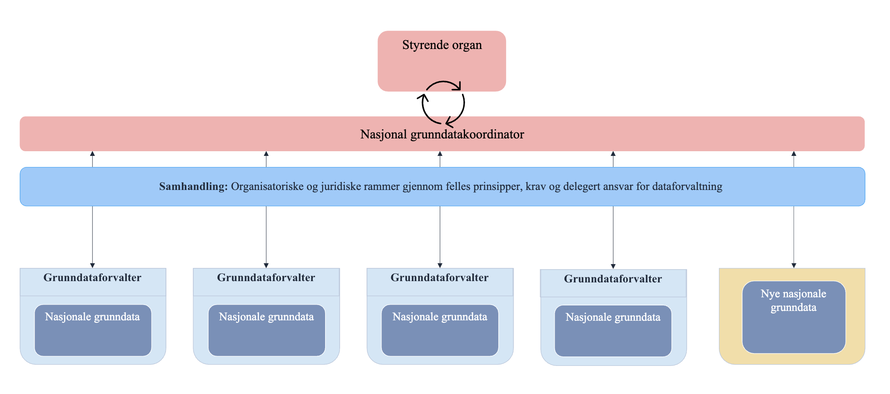
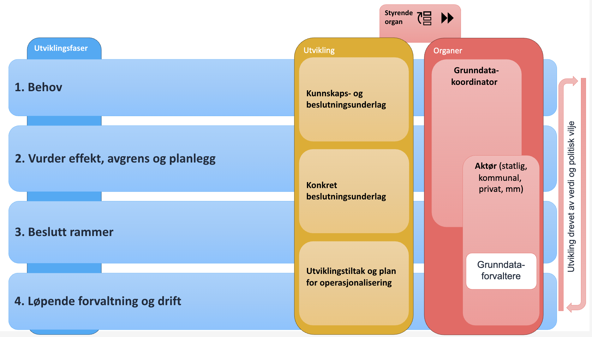

| Dette dokumentet kan også lastes ned som PDF. |
|
Om dokumentet Dato: 15. oktober 2025
Versjon: 1.0 |
Innledning: Hva er Nasjonale grunndata og hvorfor er det behov for et rammeverk
Rammeverket for Nasjonale grunndata har sitt utspring i Skate-sak 15/22. Saksforslaget dreide seg opprinnelig om kun én gang-prinsippet. Arbeidet med saken ble innledet med et innsiktsarbeid for å utvide problemforståelsen. Innsiktsarbeidet viste at utfordringsbildet er sammensatt med sterke avhengigheter mellom de enkeltvise utfordringene. Det er å vanskelig å peke på en entydig løsning for hver enkelt utfordring og de må sees i sammenheng. I tillegg er det svært mange interessenter med ulike perspektiver som gjør at fokus på en utfordring kan lede til nye utfordringer for en eller flere aktører. Det er imidlertid elementer i alle utfordringene som peker mot behov for å etablere en felles og helhetlig modell for forvaltning, styring, prioritering og koordinering av viktige data i offentlig sektor. Fraværet av en slik modell fører til manglende rolleavklaringer, ukoordinerte initiativer og utfordringer med å sikre videreutvikling og effektiv bruk av sentrale data.
Kun én gang
Økt deling av data mellom offentlige aktører har lenge vært et politisk mål. Mye av motivasjonen til økt deling av data i offentlig sektor ligger i prinsippet om kun én gang. Kun én gang innebærer at innbyggere og virksomheter skal oppgi opplysninger til det offentlige kun én gang, til kun én offentlig aktør – og deretter deles og gjenbrukes mellom aktører. Dette forhindrer at flere aktører samler inn og forvalter de samme dataene.
Iverksetting av kun én gang-prinsippet kan gi store ressursbesparelser og legger grunnlaget for en mer effektiv offentlig forvaltning. Hovedgevinstene ved kun én gang kan oppsummeres i følgende punkter:
-
Brukeren i sentrum: istedenfor at innbygger og næringsliv skal fungere som brevdue for offentlig sektor når de mottar tjenester, oppgir de dataene sine én gang til én aktør.
-
Effektivisering: i stedenfor at mange etater bruker ressurser på å samle inn og forvalte samme type data, gjøres dette av én etat som da legger til rette for deling med de etatene som har grunnlag for å gjenbruke dataene.
-
Bedre datakvalitet: istedenfor at samme type data forvaltes i ulike lokalversjoner, forvaltes de i én autoritativ kilde som alltid er korrekt og oppdatert. Dette gir bedre og riktigere data.
Konsumenter av data har i et økende omfang behov for data til å forbedre prosesser, oppgaveløsning og tjenester, og dette behovet kan for den enkelte virksomhet være en større driver enn kun én gang. Behovet for stabil tilgang til data med avklart kvalitet, forutsigbare støtteprosesser og -funksjoner vil likevel være viktig, uavhengig av drivkreftene for behovet.
Nasjonale grunndata
Siden kun én gang først ble omtalt i Meld. St. 27 (2015–2016) Digital agenda for Norge — IKT for en enklere hverdag og økt produktivitet har data blitt viktigere og betraktes nå som sentral infrastruktur i samfunnet.
Av alle dataene som eksisterer og brukes i offentlig sektor, er det noen typer data som er særlig viktige på et samfunnsnivå. Disse særlig viktige dataene kaller vi nasjonale grunndata, og visjonen for nasjonale grunndata for Norge er:
Nasjonale grunndata er opplysninger mange har bruk for og som er særlig viktig for samfunnets funksjoner og tjenester. De skal ha tilstrekkelig kvalitet og være enkelt tilgjengelig.
Vi har i dag godt forvaltede data i felles offentlige registre; enhetsregisteret, folkeregisteret, kontakt- og reservasjonsregisteret og matrikkelen. Dataene i disse registrene er særlig viktige fordi de inngår i svært mange prosesser og verdikjeder i offentlig forvaltning (f.eks. tjenesteyting og saksbehandling). Ikke minst kan dataene være viktige i kritiske samfunnsfunksjoner tillagt nødetatene. Det er imidlertid ikke automatikk i at data samlet inn til et formål automatisk er grunndata for samfunnet. En rekke data er svært viktige for en enkelt virksomhet eller en enkelt sektor hvor de brukes til ulike formål, uten at de er viktige på tvers i samfunnet. Antakeligvis vil kun en delmengde av innsamlede data, for eksempel i et register, være Nasjonale grunndata.
Et rammeverk sørger for kvalitet og tilgang på nasjonale grunndata
For å sikre tilstrekkelig kvalitet og tilgjengelighet for nasjonale grunndata, må det tydeliggjøres hvem som har ansvar for hva, hva som ligger i ansvaret og hvordan aktørene skal samhandle. Et rammeverk må på plass for at vi skal klare å nå visjonen om Nasjonale grunndata for Norge.
Rammeverket for Nasjonale grunndata bidrar til at data med stor nasjonal nytte forvaltes og utvikles i et langsiktig perspektiv, i tråd med samfunnsbehov og mål. Rammeverket sikrer at de nasjonale grunndataene forvaltes på en helhetlig måte. Tilbydere av data får bedre organisatoriske rammer for prioritering og videreutvikling av dataene, samt at rammeverket kan bidra til avklaring og tydeliggjøring av de juridiske rammene. Konsumenter av data har trygg tilgang til data, og disse har tilstrekkelig kvalitet.
Rammeverket innebærer forpliktelser for både datatilbydere og -konsumenter, og er avhengig av politisk vilje og oppmerksomhet for å lykkes.
På lag med dagens styring
Selv om rammeverket introduserer nye roller og prosesser, spiller rammeverket på lag med eksisterende styringsstrukturer i forvaltningen, deriblant sektorprinsippet. Samtidig inneholder rammeverket mekanismer som muliggjør tverrsektoriell forvaltning og bruk av data. Grunnleggende i rammeverket er forståelsen for at dataforvaltningsoppgavene som blir pålagt én aktør vil gi effektiviseringsgevinst hos en annen aktør. I det store bildet kommer en slik fordeling av innsats og gevinst hele samfunnet til gode.
Del 1: Organisering, roller og aktører
Dette kapitlet beskriver rammeverkets hovedaktører og samspillet dem imellom. Oppsummert består modellen av et styrende organ, en nasjonal grunndatakoordinator og grunndataforvaltere. Se figur under:

Styrende organ
Nasjonale grunndata trenger et styrende organ som gir nasjonal grunndatakoordinator oppdrag og prioriterer arbeid knyttet til utviklingen av Nasjonale grunndata. Tilsvarende må saker fra nasjonal grunndatakoordinator kunne løftes til det styrende organet.
Nasjonal grunndatakoordinator (grunndatakoordinator)
Grunndatakoordinatoren er en sentral aktør som sitter på den totale oversikten over alle Nasjonale grunndata, deres tilbydere, konsumenter samt pågående utviklingsinitiativer. Rollens hovedformål er å sikre enhetlig, stabil retning på utviklingen og forvaltningen av nasjonale grunndata.
Grunndatakoordinatorens hovedansvar og oppgaver
1. Ansvarlig for rammeverket:
-
Forvalter rammeverket, og utvikler og justerer det etter behov. Dette gjelder bl.a. prinsipper og kriterier for nasjonale grunndata, prosesser, rollefordeling og avtalemaler.
-
Fanger opp, og – der det er hensiktsmessig – inkorporerer krav fra kommende EU-regelverk.
-
Sørger for at rammeverket er lett å forstå for alle involverte.
2. Ansvarlig for nasjonal grunndataoversikt:
-
Utvikle og etablere grunndataoversikten med utgangspunkt i dagens felles offentlige registre.
-
Sørge for å ha løpende oversikt over alle data som har blitt etablert som nasjonale grunndata, samt kandidater til vurdering.
-
Sørge for at oversikten er et kommuniserende verktøy som tydelig viser logiske sammenhenger og mulige koblinger mellom grunndata.
3. Ansvarlig for å holde oversikt over og dokumentere behov for Nasjonale grunndata i forvaltningen:
-
Vedlikeholde liste over behov, enten innmeldte eller identifisert av grunndatakoordinatoren selv ved hjelp av grunndataoversikten.
-
synliggjør overlapp i data
-
synliggjør manglende data
-
tydeliggjør ansvar og manglende ansvar for data
-
identifiserer behov for begrepsavklaringer
-
Fasilitere dokumentering av effekt og samfunnsgevinst som følge av bruk av grunndata.
-
Drive fram forståelse av verdien av Nasjonale grunndata og gevinster ved å ha en helhetlig utvikling av Nasjonale grunndata
-
4. Ansvarlig for å koordinere og fasilitere utviklingen av Nasjonale grunndata:
-
Koordinere arbeidet med å omsette behov til handling og utviklingstiltak. I dette ligger å se sammenhenger, knytte sammen relevante aktører og forankre behov for innsats.
Sammensetning og kompetanse
Grunndatakoordinator-rollen bør bestå av ressurser med kompetanse fra både data- og forretningssiden i offentlig forvaltning. Deltakerne må forstå dataenes rolle i verdiskapende prosesser, hvordan forvaltning av data kan organiseres og hvilke konsekvenser organiseringen har for tilbyder og konsument av data.
Rollen bør bestå av en kontinuerlig kjerne, men tverrsektorielt samarbeid og fagekspertise er hovedfaktorer for at rollen som nasjonal grunndatakoordinator kan fungere. Rollen bør derfor støttes av en koordineringsgruppe bestående av deltakere fra ulike sektorer og fagområder.
Rollen har sannsynligvis en grenseflate mot roller som kommer fra EU-forordninger, spesielt gjelder det rollen National Competent Body fra Data Governance Act.
Samspill med andre aktører
Grunndatakoordinatoren fungerer som et bindeledd mellom alle aktørene i rammeverket.
Behovs- og beslutningsunderlagene som grunndatakoordinatoren utarbeider i forbindelse med utvikling av nasjonale grunndata (se del 3), prioriteres videre av [styrende organ] før de omsettes til utvikling.
Grunndataforvalter
Grunndataforvalteren er virksomheten som forvalter en type grunndata (NAV er eksempelvis grunndataforvalter for arbeidsforholdsdata). Grunndataforvalteren er den aktøren som sitter nærmest dataene og har mest kunnskap om f.eks. dataenes kvalitet, bruk, driftsrutiner og tekniske aspekter.
Grunndataforvalters hovedansvar og oppgaver
-
Imøtekomme krav til dataforvaltning, kvalitet og tilgjengelighet.
-
Sikre at forvaltningen av data følger prinsipper og prosesser som beskrevet i rammeverket.
-
Kontinuerlig identifisere konsumenters behov.
-
Koordinere forvaltningsaktiviteter med andre grunndataforvaltere.
-
Kommunisere utviklingsbehov til grunndatakoordinator.
Sammensetning og kompetanse
Grunndataforvalter velger selv hvordan de rigger seg lokalt for å ivareta grunndataforvalterrollen. Grunndatakoordinator skal ikke engasjere seg i grunndataforvalterens lokale forvaltning og driftsrutiner.
Samspill med andre aktører
Grunndataforvalter må ha en tett samhandling med grunndatakoordinator og det styrende organet.
Del 2: Kriterier og prinsipper for nasjonale grunndata
Dette kapitlet fastsetter, på overordnet nivå, kriteriene og prinsippene som er førende for de nasjonale grunndataene, deres tilbydere og konsumenter.
Dette er en viktig del av rammeverk som har som formål å sikre at visjonen om tilstrekkelig kvalitet og enkel tilgang på nasjonale grunndata oppnås.
Kriterier for nasjonale grunndata
Kriterier for nasjonale grunndata har til hensikt å presisere hva Nasjonale grunndata er, hva som kjennetegner dem og hvor skillet mellom grunndata og «andre» data går. Dette er for å sikre at rammeverket konsentrerer seg om de viktigste dataene. Kriteriene illustrerer både de iboende egenskapene som kjennetegner Nasjonale grunndata samt forventingene som stilles til disse dataene.
Kriteriene er et sentralt verktøy for blant andre grunndatakoordinatoren i å sørge for at de «riktige» dataene tas inn i grunndataoversikten. Kriteriene brukes i en første vurdering for å identifisere kandidater til nasjonale grunndata.
Grunndataforvalter kan bruke kriteriene til å identifisere hvilke data som kan være nasjonale grunndata og utvikle/utbedre grunndata.
Kriterier
-
Andre aktører er avhengige av dataene for å løse sitt samfunnsoppdrag
-
Gir verdi på tvers av sektorer
-
Dataene dekker et behov for mange konsumenter
-
Dataene er en autoritativ kilde som innebærer at de svarer ut et av fire krav nedenfor:
-
Eksisterer regelverk som pålegger aktører å benytte disse dataene
-
Er eneste eksisterende kilde
-
Data som brukere anser at bør være autoritativ kilde
-
Finnes flere kilder, men disse dataene har bedre kvalitet/større brukergruppe
-
Prinsipper
Rammeverket for Nasjonale grunndata følger de overordnede arkitekturprinsipper for digitalisering av offentlig sektor i henhold til Digitaliseringsrundskrivets punkt 1.11; Følg krav om arkitektur og standarder. Dette innebærer at man bruker samme form, og beskriver hovedprinsipper med konkrete anbefaleringer til etterlevelse av prinsippene. De overordnede arkitekturprinsippene har formen navn, forklaring, begrunnelse, anbefalinger, veiledning og ressurser.
Prinsippene for Nasjonale grunndata supplerer de overordnede arkitekturprinsippene og kobles særlig til prinsipp fire om deling og gjenbruk av data, se oversikt over de overordnede arkitekturprinsippene i tabellen nedenfor.
| Nr. | Prinsipp | Kobling til nasjonale grunndata |
|---|---|---|
1 |
Ta utgangspunkt i brukernes behov |
Hvilke data som får status som nasjonale grunndata skal være basert på brukerbehov. Nasjonale grunndata er data som er særlig viktig for samfunnet og mange har behov for. |
2 |
Ta arkitekturbeslutninger på rett nivå |
For nasjonale grunndata er det spesifisert forskjellige roller som har forskjellig ansvar. Grunndataforvalter og nasjonal grunndatakoordinator |
3 |
Bidra til digitaliseringsvennlige regelverk |
Arbeidet med nasjonale grunndata vil bidra til å identifisere juridiske barrierer for samhandling og digitalisering, og bidra til å kunne igangsette lov- og forskriftsendringer |
4 |
Del og gjenbruk data |
Nasjonale grunndata vil bidra til at det blir enklere å dele og gjenbruke data |
5 |
Del og gjenbruk løsninger |
Nasjonale grunndata vil blant annet bidra til økt standardisering, gjenbruk av informasjonsmodeller, samarbeid rundt begrepsarbeid osv. |
6 |
Lag digitale løsninger som støtter samhandling |
Rammeverket for nasjonale grunndata vil bidra til juridisk, organisatorisk, semantisk og teknisk samhandlingsevne. Dette innebærer blant annet standardisering, avtaler og felles begrepsapparat. |
7 |
Sørg for tillit til oppgaveløsningen |
Rammeverk for nasjonale grunndata kan bidra til etterlevelse av regelverket og ivareta krav til rettssikkerhet, effektivitet, informasjonssikkerhet og personvern. |
Dataforvaltning
Nasjonale grunndata skal ha en kvalitet som sikrer at de er pålitelige, relevante og egnet til å dekke brukernes behov. Dataenes bruksverdi, integritet og forvaltning skal ivaretas, slik at de reflekterer faktiske forhold.
Anbefalinger til etterlevelse:
Sørg for at Nasjonale grunndata følger fastsatte krav og prosesser i rammeverket for Nasjonale grunndata:
-
Nasjonale grunndata skal ha et avklart forvaltningsansvar slik at ansvar for datakvalitet er plassert
-
Dette gjelder utforming, etablering og forvaltning av nasjonale grunndata, både med hensyn til forutsetninger, ansvarsforhold, risikofaktorer og ressursbruk.
-
-
Nasjonale grunndata skal ha tilstrekkelig kvalitet til å dekke et nasjonalt behov (konsumenters behov på tvers av sektorer)
-
Det må være tydelig og forståelig hvilke krav som stilles til kilden for opplysninger, og hvem som har ansvar for å gi hvilke bidrag til sikring av kvalitet og troverdighet.
-
Etablere tilbakemeldingssløyfer og rutiner for hvordan man opprettholder kvalitet på data.
-
Datadeling og -sammenstilling
Nasjonale grunndata deles med de som har rettighet til det. Dataenes livssyklus, anvendbarhet og «kombinerbarhet» må sikres. Dataene skal kunne benyttes i ulik brukskontekst, saksbehandling, livshendelser eller situasjonsforståelse.
Anbefalinger til etterlevelse:
Sørg for at Nasjonale grunndata er innrettet for flerbruk og kan anvendes effektivt og enkelt:
-
Nasjonale grunndata skal forvaltes og tilgjengeliggjøres slik at konsumenter ikke har behov for å samle inn dataene inn på nytt
-
Nasjonale grunndata skal baseres på FAIR-prinsippene
-
Nasjonale grunndata skal kunne kombineres med andre data. Det er gjennom sammenstilling dataene gir høy verdi på tvers og skaper stor samfunnsnytte
Del 3: Prosesser
I 2025 er de nasjonale grunndataene som finnes i norsk offentlig forvaltning ikke er definert. Rammeverkets prosesser vil derfor de neste årene konsentrere seg rundt følgende aktiviteter:
-
Identifisere nasjonale grunndata-kandidater
-
Igangsette forbedringstiltak slik at dataene innfrir krav til tilstrekkelig kvalitet, kombinerbarhet og tilgjengelighet
-
Sørge for å oppnå kun én gang-prinsippet for de grunndataene som fortløpende inngår i grunndataoversikten (dvs. at Innbyggere og virksomheter oppgir opplysninger til det offentlige kun én gang, til kun én offentlig aktør, og at konsumenter er forpliktet til å hente dataene hos den ene kilden).
På sikt, ettersom grunndataoversikten fylles med innhold, vil kontinuerlig forvaltning av grunndataene på nasjonalt nivå utgjøre en større del av rammeverkets prosesser.
Utviklingsfaser for nasjonale grunndata
Dette kapittelet skisserer prosessene for hvordan aktiviteten beskrevet punktvis ovenfor skal utføres. Prosessen er inndelt i fire utviklingsfaser.

Illustrasjonen over viser utviklingsfasene som en firetrinnsprosess, hvorav de tre første er planprosesser og den fjerde er drift og forvaltning. Formålet med utviklingsfasene er å identifisere nasjonale grunndata-kandidater, vurdere nytteverdien av å innlemme dem som nasjonale grunndata, hva som må til for at de skal innfri krav til kvalitet og tilgjengelighet og hvordan de skal driftes av grunndataforvalter.
Fase 1: Behov
I forkant av fase 1 er enten et behov for nasjonale grunndata eller en mulig kandidat for nasjonale grunndata identifisert og meldt inn til grunndatakoordinator. Formålet med fase 1 er å vurdere og dokumentere potensialet til kandidaten eller hvordan et innmeld databehov kan ivaretas av nasjonale grunndata. Dataenes forvaltnings- og forretningsbehov blir identifisert og vurdert opp mot kriteriene (beskrevet i del 1).
Grunndatakoordinatoren har ansvar for å utarbeide kunnskaps- og beslutningsgrunnlaget. Dette, brukes til å avgrense hvilke data det er snakk om, og hva som skal oppnås med å gi dem status som nasjonale grunndata. Det svarer ut hvem som har nytte av dataene, hva som er antatte gevinster og hva som kreves for å forvalte dataene som nasjonale grunndata.
Et godt kunnskapsgrunnlag danner utgangspunktet for videre utforskning i fase 2.
Fase 2: Vurder effekt, avgrens og planlegg
Er potensialet til kandidaten vurdert som tilstrekkelig i fase 1, brukes fase 2 på å vurdere effekten av dataene i et kost/nytte-perspektiv. I fase 2 skal et fullverdig beslutningsgrunnlag foreligge. Beslutningsgrunnlaget, skal inneholde en grovestimering av innsatsen som må til for å realisere potensialet som er beskrevet. Juridiske og organisatoriske realiseringskrav må også beskrives. Forslag til hvem som blir grunndataforvalter inkluderes. Fase 2 utgjør grunnlaget for å iverksette konkrete endringer.
Fase 3: Beslutt rammer
I fase 3 skal konkrete utviklingstiltak og plan for operasjonalisering formes slik at de aktuelle grunndataene tilfredsstiller fastsatte krav og prosesser i rammeverket. Tiltak og plan må dokumenteres og forankres med grunndatakoordinator og styrende organ. De økonomiske, juridiske og organisatoriske rammene må avklares, og tildeling av rollen som nasjonal grunndataforvalter besluttes formelt av styrende organ.
Fase 4: Løpende forvaltning og drift
I fase 4 er de konkrete tiltakene fra fase 3 iverksatt og må opprettholdes. De involverte aktørene sørger for at ordningen øker sin verdi ved å tilpasse den nye juridiske og organisatoriske krav som måtte komme, f.eks. nye krav til datakvalitet og nye aktørers behov. Løpende forvaltning og drift må også holde tritt med teknologiutviklingen. Finansiering av drift må kontinuerlig sikres over budsjett og tildelingsbrev.